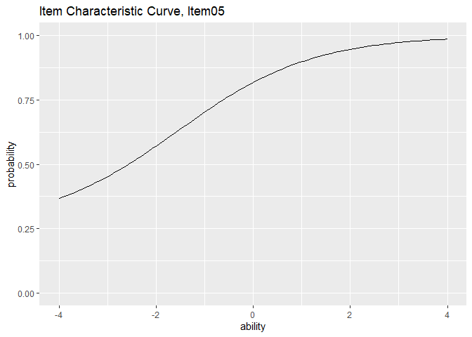

ggExametrika provides ggplot2-based visualization for the exametrika package. It supports a wide range of psychometric models:
| Model | Description |
|---|---|
| IRT | Item Response Theory (2PL, 3PL, 4PL) |
| GRM | Graded Response Model |
| LCA | Latent Class Analysis |
| LRA | Latent Rank Analysis |
| Biclustering | Simultaneous item/student clustering |
| IRM | Infinite Relational Model |
| LDLRA | Locally Dependent Latent Rank Analysis |
| LDB | Locally Dependent Biclustering |
| BINET | Bayesian Network and Test |
| BNM | Bayesian Network Model |
Reference
Shojima, Kojiro (2022) Test Data Engineering: Latent Rank Analysis, Biclustering, and Bayesian Network (Behaviormetrics: Quantitative Approaches to Human Behavior, 13), Springer, https://amzn.to/42eNArd
Examples
All plot functions take exametrika output directly and return ggplot objects. Functions are named plotXXX_gg().
IRT: Item Characteristic Curve (plotICC_gg)
library(exametrika)
library(ggExametrika)
result_irt <- IRT(J15S500, model = 3)
plots <- plotICC_gg(result_irt)
plots[[5]]
combinePlots_gg(plots)
IRT: Item Information Curve (plotIIC_gg)
plots <- plotIIC_gg(result_irt)
combinePlots_gg(plots, selectPlots = 8:11)
IRT: Test Information Curve / Test Response Function (plotTIC_gg, plotTRF_gg)
plotTIC_gg(result_irt)
plotTRF_gg(result_irt)GRM: Item Category Response Function (plotICRF_gg)
result_grm <- GRM(J5S1000)
plots <- plotICRF_gg(result_grm)
plots[[1]]
combinePlots_gg(plots, selectPlots = 1:5)
# GRM also supports IIC and TIC
plotIIC_gg(result_grm)
plotTIC_gg(result_grm)LCA: Latent Class Analysis
result_lca <- LCA(J15S500, ncls = 3)
plotIRP_gg(result_lca) # Item Reference Profile
plotFRP_gg(result_lca) # Field Reference Profile
plotTRP_gg(result_lca) # Test Reference Profile
plotLCD_gg(result_lca) # Latent Class Distribution
plotCMP_gg(result_lca) # Class Membership ProfileLRA: Latent Rank Analysis
result_lra <- LRA(J15S500, nrank = 4)
plotIRP_gg(result_lra) # Item Reference Profile
plotFRP_gg(result_lra) # Field Reference Profile
plotTRP_gg(result_lra) # Test Reference Profile
plotLRD_gg(result_lra) # Latent Rank Distribution
plotRMP_gg(result_lra) # Rank Membership ProfileBiclustering
result_bic <- Biclustering(J35S515, nfld = 5, nrank = 6)
plotFRP_gg(result_bic) # Field Reference Profile
plotTRP_gg(result_bic) # Test Reference Profile
plotLRD_gg(result_bic) # Latent Rank Distribution
plotRMP_gg(result_bic) # Rank Membership Profile
plotCRV_gg(result_bic) # Class Reference Vector
plotRRV_gg(result_bic) # Rank Reference Vector
plotArray_gg(result_bic) # Array Plot (heatmap)LDB: Locally Dependent Biclustering
result_ldb <- LDB(J35S515, ncls = 6, nfld = 5)
plotFRP_gg(result_ldb) # Field Reference Profile
plotTRP_gg(result_ldb) # Test Reference Profile
plotLRD_gg(result_ldb) # Latent Rank Distribution
plotRMP_gg(result_ldb) # Rank Membership Profile
plotArray_gg(result_ldb) # Array Plot
plotFieldPIRP_gg(result_ldb) # Field Parent Item Reference Profile
plotGraph_gg(result_ldb) # DAG per rankBINET: Bayesian Network and Test
result_binet <- BINET(J35S515, ncls = 6, nfld = 5)
plotFRP_gg(result_binet) # Field Reference Profile
plotTRP_gg(result_binet) # Test Reference Profile
plotLCD_gg(result_binet) # Latent Class Distribution
plotCMP_gg(result_binet) # Class Membership Profile
plotArray_gg(result_binet) # Array Plot
plotGraph_gg(result_binet, show_edge_label = TRUE) # DAG with edge labelsBNM / LDLRA: DAG Visualization (plotGraph_gg)
result_bnm <- BNM(J15S500)
plotGraph_gg(result_bnm)
result_ldlra <- LDLRA(J15S500, ncls = 5)
plotGraph_gg(result_ldlra) # One DAG per rankFunction-Model Compatibility
| Function | IRT | GRM | LCA | LRA | Bic. | IRM | LDLRA | LDB | BINET | BNM |
|---|---|---|---|---|---|---|---|---|---|---|
| plotICC_gg | x | |||||||||
| plotIIC_gg | x | x | ||||||||
| plotTIC_gg | x | x | ||||||||
| plotTRF_gg | x | |||||||||
| plotICRF_gg | x | |||||||||
| plotIRP_gg | x | x | x | |||||||
| plotFRP_gg | x | x | x | x | ||||||
| plotTRP_gg | x | x | x | x | x | x | ||||
| plotLCD_gg | x | x | ||||||||
| plotLRD_gg | x | x | x | x | ||||||
| plotCMP_gg | x | x | ||||||||
| plotRMP_gg | x | x | x | x | ||||||
| plotCRV_gg | x | |||||||||
| plotRRV_gg | x | |||||||||
| plotArray_gg | x | x | x | x | ||||||
| plotFieldPIRP_gg | x | |||||||||
| plotGraph_gg | x | x | x | x |
Common Plot Options
Many functions support these customization options:
| Parameter | Description | Default |
|---|---|---|
title |
TRUE (auto), FALSE (none), or character string |
TRUE |
colors |
Color vector (colorblind-friendly default) | auto |
linetype |
"solid", "dashed", "dotted", etc. |
"solid" |
show_legend |
Show/hide legend | TRUE |
legend_position |
"right", "top", "bottom", "left"
|
"right" |